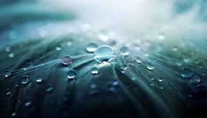

To address water wastage, consider implementing the following solutions:
By adopting simple water conservation techniques, we can reduce water wastage and promote sustainable use of water resources. In this article, we will explore some of the ways to reduce water wastage.
In conclusion, reducing water wastage requires collective efforts and conscious choices by individuals, communities, and governments. By adopting simple water conservation techniques, we can promote sustainable use of water resources and ensure their availability for future generations.
In conclusion, water is a precious resource, and its wastage can have significant impacts on the environment, economy, and society. Water wastage exacerbates water scarcity, contributes to the degradation of ecosystems, and leads to increased costs for households and businesses. Moreover, it has severe social effects, including inequitable distribution of water resources, health risks and diseases caused by water contamination, and impact on access to education and employment opportunities.
To mitigate the effects of water wastage, it is crucial to promote sustainable use of water resources through conservation, efficient usage, and sound management practices. This requires collective efforts and cooperation between individuals, communities, and governments to ensure equitable distribution of water resources, promote hygiene and sanitation, and reduce water wastage. By adopting simple water conservation techniques and becoming responsible water users, we can help conserve water and ensure its availability for future generations. It is time for us to take action and contribute to a sustainable future where water resources are protected, conserved, and utilized efficiently.
Finally before we conclude here a few things that you should remeber about water:
By adopting these solutions, we can work towards a more sustainable and responsible use of water resources.
